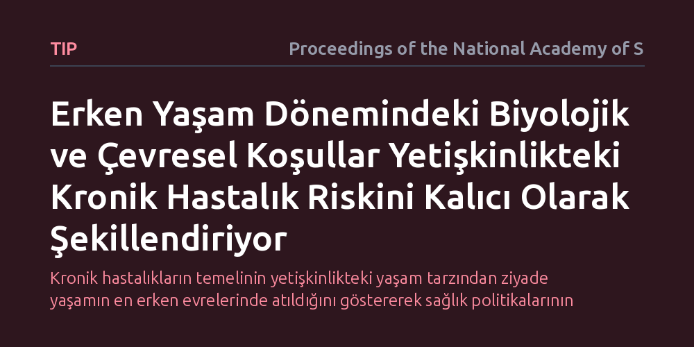

TIP · Proceedings of the National Academy of Sciences · 2026-10-08
Çalışma, erken yaşam koşullarının yetişkinlikte görülen kronik hastalık riskini nasıl belirlediğini incelemektedir. Bulgular, gebelik öncesinden çocukluğa uzanan süreçteki biyolojik ve çevresel maruziyetlerin, epigenetik ve hücresel mekanizmalarla uzun vadeli sağlığı kalıcı biçimde şekillendirdiğini göstermektedir.
Kronik hastalıkların temelinin yetişkinlikteki yaşam tarzından ziyade yaşamın en erken evrelerinde atıldığını göstererek sağlık politikalarının odağını tedavi yerine erken çocukluk desteğine kaydırmaktadır.

Yüksek gelirli ülkelerde kalp ve damar rahatsızlıkları, tip 2 diyabet ve metabolik bozukluklar gibi bulaşıcı olmayan kronik hastalıklar giderek tırmanıyor. Bu yaygın hastalıklar toplum genelinde ciddi yeti yitimine ve erken ölümlere yol açarken, sağlık sistemleri üzerinde de sürdürülmesi güç bir ekonomik yük oluşturuyor. Uzun yıllar boyunca tıp dünyası, bu hastalıkların temel sorumlusu olarak orta yaşlarda edinilen yetersiz beslenme, hareketsizlik ve sigara gibi yaşam tarzı alışkanlıklarını gördü. Ancak mevcut bulgular, bireyin bu risklere karşı duyarlılığının çok daha erken dönemlerde belirlendiğine işaret ediyor.
Asıl soru tam da bu noktada ortaya çıkıyor: Bir insanın ellili yaşlarında karşılaşacağı kardiyovasküler sorunların veya metabolik bozuklukların kökeni, henüz anne karnındayken ve hatta döllenmeden önce şekilleniyor olabilir mi? Yaşamın ilk evrelerindeki biyolojik ve çevresel maruziyetlerin insan fizyolojisini nasıl kalıcı bir rotaya soktuğunu anlamak, modern tıbbın sadece tedavi yöntemlerini değil, sağlığı koruma anlayışını da yeniden şekillendiriyor.
Araştırmacılar bu sorunun yanıtını bulmak için tek bir deneyle sınırlı kalmayıp çok sayıda bilimsel disiplinin verilerini bir araya getirdi. Kanıtların ilk sacayağını, on binlerce bireyin doğum ağırlığı, bebeklik dönemi beslenmesi ve ileri yaşlardaki kalp sağlığını on yıllar boyunca kesintisiz izleyen geniş ölçekli epidemiyolojik kohortlar oluşturuyor. Bu uzun soluklu izleme çalışmaları, yetersiz doğum ağırlığı ile yetişkinlikteki damar tıkanıklığı arasındaki doğrudan istatistiksel ilişkiyi ortaya çıkardı.
İkinci aşamada ise bu ilişkinin altındaki hücresel ve moleküler mekanizmalar incelendi. Araştırmada anne adaylarının gebelik öncesi beden kitle indeksi ile bebeklerin kordon kanındaki DNA metilasyon düzeyleri arasındaki bağlantılar değerlendirildi. Ayrıca gestasyonel diyabetin bebekteki metabolik genlerin işleyişini nasıl etkilediği, çocukluk dönemindeki yoğun stresin beyindeki beyaz cevher lifleri üzerindeki yapısal etkileri ve erken gelişim müdahalelerinin uzun vadeli ekonomik modelleri sentezlendi.
İncelemeler, erken yaşam evresinde maruz kalınan çevresel koşulların doku ve organ gelişimi üzerinde geri döndürülmesi güç izler bıraktığını gösteriyor. Anne karnında veya erken bebeklikte kısıtlı besin alan fetus, hayatta kalabilmek için enerjiyi idareli kullanan tutumlu bir metabolizma geliştiriyor. Ancak erken dönemde kıtlığa göre programlanan bu fizyoloji, yetişkinlikte yüksek kalorili ve hareketsiz bir çevreyle karşılaştığında hızla insülin direnci ve damar sertliği gibi kronik hastalıklara zemin hazırlıyor.
Moleküler düzeydeki bulgular, bu kalıcı etkinin epigenetik mekanizmalar aracılığıyla korunduğunu gösteriyor. DNA dizilimi değişmese bile, genlerin çalışma temposunu belirleyen kimyasal etiketler olan DNA metilasyonu çevreye uyum sağlayacak şekilde yeniden düzenleniyor. Örneğin annenin metabolik durumu ve gebelik diyabeti, fetüsün metabolizmayı düzenleyen gen bölgelerinde belirgin metilasyon farklılıklarına yol açıyor. Benzer şekilde, erken çocukluktaki olumsuz deneyimler ve kronik stres, beynin bağlantı ağlarında ve stres tepki sistemlerinde kalıcı yapısal değişiklikler meydana getiriyor.
Bu sonuçlar, kronik hastalıklarla mücadelede mevcut klinik yaklaşımların zamanlamasını kökten sorgulatıyor. Hastalık klinik olarak teşhis edildikten sonra başlatılan ilaç tedavileri ya da yaşam tarzı değişiklikleri semptomları kontrol altına alabilse de, yaşamın en başında kurgulanan hücresel ve yapısal programlamayı tamamen sıfırlayamıyor. Erken gelişim modelleri, yaşamın ilk yıllarında sağlanan nitelikli beslenme ve güvenli çevrenin sağladığı koruyucu etkinin, yetişkinlikte yapılan müdahalelere kıyasla çok daha yüksek verimlilik taşıdığını ortaya koyuyor.
Sonuç olarak, toplum sağlığını uzun vadede korumanın en etkili yolu, bireylere sadece yetişkinlikte sağlıklı yaşam tavsiyeleri vermekle sınırlı kalamaz. Döllenme öncesinden başlayarak anne adayının metabolik sağlığını korumak, gebelik sürecini desteklemek ve erken çocuklukta güvenli bir gelişim ortamı sağlamak, kronik hastalık yükünü kalıcı olarak azaltmanın temel şartıdır. Yetişkinlikteki kronik hastalıklar anlık birer aksilik değil, yaşamın başında başlayan biyolojik serüvenin tüm bir ömre yayılan sonucudur.